重点解析V8引擎的垃圾回收机制。
本文重点内容是关于V8的垃圾回收机制，以及V8对垃圾回收的优化策略，首先需要对内存结构有一个初步了解。
什么是内存
通常我们说的计算机由5个部分组成，控制器、运算器、输出设备、输出设备、存储器，而我们说的内存通常属于存储器，而程序运行时CPU需要调用的指令和数据只能通过内存获取（硬盘只有存储功能，执行时会将数据缓存到内存中），所以不管是什么语言的程序，运行时都依赖内存，而内存生命周期基本都是一致的：
- 分配所需要的内存
- 使用分配到的内存（读、写）
- 不需要时将其释放、归还
简述堆和栈
什么是堆和栈
在V8引擎中，可以先粗犷的分为两个部分 栈 和 堆。
栈指的就是 调用栈，首先栈的特点后进先出，同时栈空间是连续的，在需要分配空间和销毁空间操作时，只需要移动下指针，所以非常适合管理函数调用。
而正因为栈空间是连续的，那它的空间就注定是非常有限的，所以不方便存放大的数据，这时我们就使用了 内存堆 来管理保存一些大数据。
基础类型和引用类型
两种变量类型：基本类型变量 和 引用变量类型。
基础变量类型：undefined, null, Number, String, Boolean, Symbol；
引用变量类型：Object、Array、Function等等，而实际上在js中Array、Function这些都是基于Object的，我们可以理解引用变量类型指的就是Object。
（这里可能有人会说 null不应该是空指针对象类型吗，typeof null === ‘Object’应该算是对象，事实上这里是一个设计上的历史遗留问题，而对V8系统来说无论是null和Undefined都只是一个存在于栈里的固定的值）。
因为基础变量类型的值通常是简单的数据段，占用固定大小的空间，所以会存储在 栈 中，而对象大小不定且通常会占用较大空间所以会存储在 堆 中，而在栈空间会保存对象存储在堆空间的地址。
我们将一段代码通过一张图来简单看一下。
var a = 123;
var b = 'abc';
var c = {x: 1};
var d = 123;
var f = c;
var g = {x: 1};
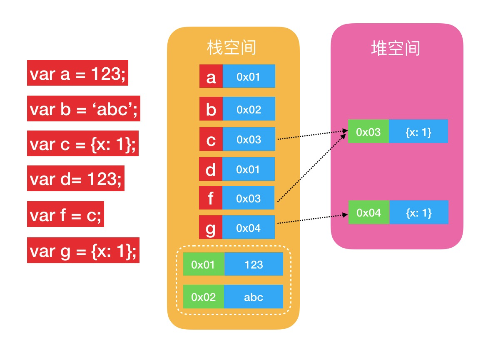
基础类型的值在创建时会开辟一块内存空间，将内存地址存储在对应的变量上，如果此时再创建一个基础类型等同于之前创建过的值，会直接将地址存储在新创建的变量上，所以就会有 a === d 。
那么如果创建一个对象，就会在堆中开辟一块空间用来存储对象，将内存地址存储在对应的变量上，如果此时创建一个新的变量（f）赋值为之前所创建的存储对象地址的变量（c），那么会将c存储的堆内存地址赋值给f，就会有 c === f。
如果此时再创建一个新的对象变量g，就会在堆中再开辟一块空间来创建对象，将地址赋予g，但是即使对象内容一样，地址不同指向的也是两块空间，就会有 g !== c。
关于函数调用也很好理解，也是用一段代码一张图来表示如下：
function main() {
func1();
}
function func1() {
func2();
func3();
};
function func2() {};
function func3() {};
main();
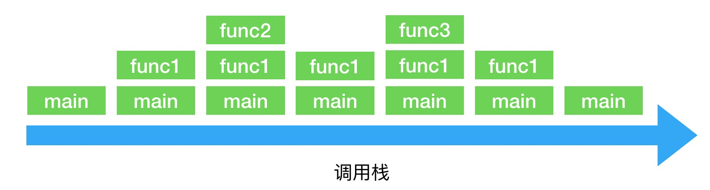
在函数间的嵌套调用的过程中外层的函数不会释放，而栈的空间是有限的也有着严格的数量限制，所以在使用递归的时候要注意是否会溢出。
V8内存管理的核心——堆
栈的管理通常比较容易一点，通过上下移动指针来管理即可，而堆的管理相对复杂很多，而我们通常说的垃圾回收等也主要针对堆来说的。
内存：按照 1MB 分页，并且都按照 1MB 对齐。新生代的内存页是连续的，而老生代的内存页是分散的，以链表的形式串联起来。Large Object Space 也分页，但页的大小会比 1MB 大一些。
每一个 Space 里的内存页开头都是一个 header，里面包括：
- 各种元数据和 flag（比如本页属于哪个空间），GC 需要使用的各种统计数据，GC 各个阶段在本页的进展状况等
- 一个 slots buffer，记录了所有指向本页内对象的指针，以节省回收时的一些扫描操作。
- 一个 skip list，将本页划分为多个区（region）并维护各个区的边界，用于快速搜索页上的对象
紧跟着 header 的是一个 bitmap，上面的每个 bit 对应页上的一个字，用于后面会介绍到的 marking。前面的部分按 32 个字对齐后，剩余的空间才是用于存储对象的。
堆空间的结构
内存的结构组成：
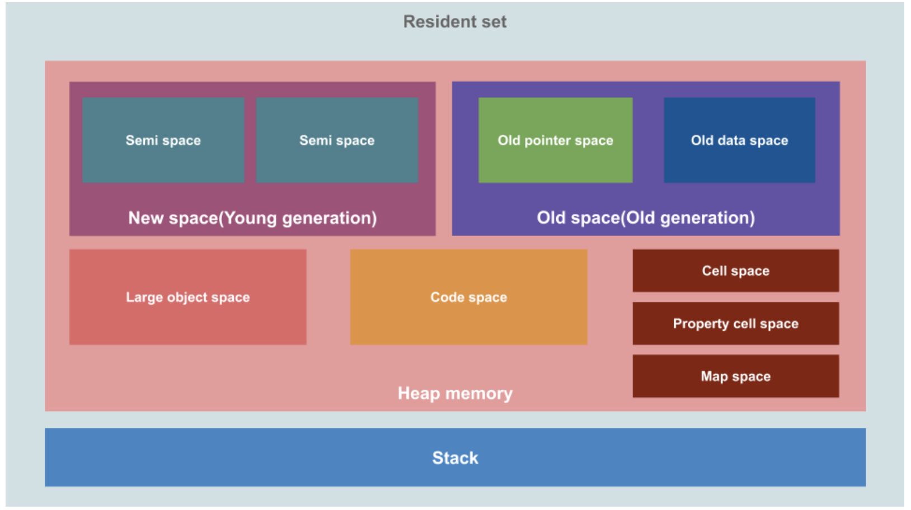
V8引擎初始化内存空间主要将堆内存分为以下（New Space、Old Space、Large Object Space、Map Space、Code Space等）区域：
New Space（新生代）Old Space（老生代）正如弱分代假设所说，大部分的对象都死得早，因此大部分的对象都属于新生代，诞生在这里。放在其他地方分配的主要包括：
- 对象的布局结构信息在 Map Space 分配
- 编译出来的代码在 Code Space 分配
- 太大不能直接放进来的对象在 Large Object Space 分配
- 创建的对象常常被晋升到 Old Space 的函数，在这些对象达到一定的生存率（survival rate）之后它再创建的对象会被自动在 Old Space 分配
出于垃圾回收算法（Scavenge）的需要，New Space 被平分成两半（两个 semispace），任一时刻只有一半被使用。在垃圾回收日志中看到的 new 和 semispace 相关的字段就与 New Space 有关。
Large Object Space（老生代）Old Space 保存的是老生代里的普通对象（在 V8 中指的是 Old Object Space，与保存对象结构的 Map Space 和保存编译出的代码的 Code Space 相对），这些对象大部分是从新生代（即 New Space）晋升而来。
V8 4.x 引入了一个新的机制 pretenuring，来应对弱分代假设不成立的情况。当 V8 探测到某些函数创建的对象有很高的存活率（survival rate），经常晋升到老生代（存活超过2次）的时候，下次这些函数再创建的对象将会直接在 Old Space 分配。这样就省略了这些对象在 New Space 第一次 GC 的时候大量复制到另一个 semispace，第二次 GC 又大量复制到 Old Space 的开销。即使猜错了，反正下一次老生代 GC 的时候这些对象也会被回收走，影响不大。
在垃圾回收日志中看到的 old 相关的字段就与 Old Space 有关，而 survival 和 promoted 相关的字段则与对象在新老生代之间的迁移有关。
Map Space（老生代）当 V8 需要分配一个 1MB 的页（减去 header）无法直接容纳的对象时，就会直接在 Large Object Space 而不是 New Space 分配。在垃圾回收时，Large Object Space 里的对象不会被移动或者复制（因为成本太高）。Large Object Space 属于老生代，使用 Mark-Sweep-Compact 回收内存。
Code Space（老生代）所有在堆上分配的对象都带有指向它的“隐藏类”的指针，这些“隐藏类”是 V8 根据运行时的状态记录下的对象布局结构，用于快速访问对象成员，而这些“隐藏类”（Map）就保存在 Map Space。
Map Space 也属于老生代，所以也使用 Mark-Sweep-Compact 回收内存。
当一个 Map 不再被任何对象引用的时候（即不再有相应结构的对象存在的时候），它也会被回收掉。
Memory Allocator编译器针对运行平台架构编译出的机器码（存储在可执行内存中）本身也是数据，连同一些其它的元数据（比如由哪个编译器编译，源代码的位置等），放置在 Code Space 中。
在 Node.js 开发中比较常见的是模板引擎编译渲染函数后，V8 为这些函数编译出的机器码会出现在这里。注意 JavaScript一开始只会被解析成抽象语法树，只有在它第一次执行的时候才会被真正编译成机器码，并且在程序的执行过程中会根据统计数据不断进行优化和修改。
Code Space 属于老生代，垃圾回收的算法也是 Mark-Sweep-Compact（实际在 V8 的源代码里 Code Space 跟 Old Space 用的是同一个类）。这些代码同样会被引用，当引用消失后（即没有办法再调用这段代码的时候）也会被回收。
唯一拥有执行权限的内存。
External memory（堆外内存）V8 中的堆划分为空间，而空间又划分为页。V8抽象出了
Memory Allocator，专门用于与操作系统交互。当空间需要新的页的时候，它从操作系统手上分配（使用
mmap）内存再交给空间，而当有内存页不再使用的时侯，它从空间手上接过这些内存，还给操作系统（使用munmap）。因此堆上的内存都要经过Memory Allocator的手，在垃圾回收日志中也能看到它经手过的内存的使用情况。
V8 允许用户自行管理对象的内存，比如 Node.js 中的 Buffer。这些叫做外部内存（external memory），在垃圾回收的时候会被 V8 跳过，但是外部的代码可以通过向 V8 注册 GC 回调，跟随 JS 代码中暴露的引用的回收而自行回收内存，相关信息也会显示在垃圾回收日志中。
注意：当外部内存占用过大时，V8 可能会选择 Full GC（包含老生代）而不是仅仅回收新生代，尝试触发用户的 GC 回调以空出更多的内存来使用。
外部代码要将自己使用的内存通过 Isolate::AdjustAmountOfExternalAllocatedMemory 上报V8才能记录，假如没有上报，就可能出现进程 RSS（Resident Set Size，实际占用的内存大小）很高，但减去垃圾回收日志中 Memory Allocator 分配的堆内存和 V8 记录下的外部内存之后，有很大一部分“神秘消失”的现象，这个时候就可以定位到 C++ addon 或者是 Node.js 自己管理的内存里去排查问题了。
内存运行的生命周期
堆内存空间分成了有不同功能作用的空间区域，重点了解一下新生代内存区和老生代内存区。
新生代包括一个New Space，老生代包括： Old Space, Code Space和Map Space，Large Object Space。 64位环境下的V8引擎的新生代内存大小32MB、老生代内存大小为1400MB，而32位则减半，分别为16MB和700MB。
新生代的对象：采用空间换取时间的Scavenge算法， 尽可能快的回收内存。
晋升机制：如果对象经历了2次GC还依然坚挺，就会在第二次回收时晋升为老生代（准确的说是保存在Old Space中）。
老生代的对象：老生代的GC采取Mark-Sweep的算法，并使用Mark-Sweep解决内存碎片的问题。
新生代内存区
假设创建了一个对象 obj，其两个space—— from space 和 to space 的作用如下：
- 首先obj会被分配到 新生代 from space中，当from space将要达到了存储的上限，开始清理
- 标记活动对象和非活动对象
- 复制 from space 的活动对象到 to space 并对其进行排序
- 释放 from space 中的非活动对象的内存
- 将 from space 和 to space 角色互换
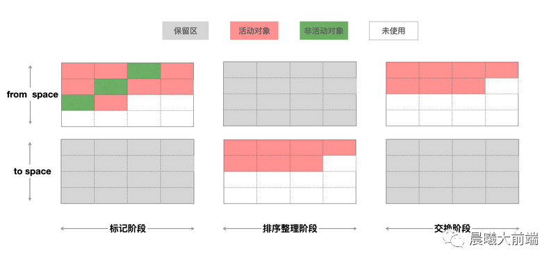
老生代内存区
现在继续上文说的那个对象 obj：
- 经过程序一段时间运行后的obj依然存活在新生代内存区，终于满足了晋升条件，便转移到了老生代内存区。
- 又过了一段时间对象 obj 终于不被引用了，同时老生代内存区域空间也被占用了很多的空间，V8就会在老生代里面进行遍历，发现了对象 obj 已经不被引用了，于是给他打了个标记。
- 由于V8是单线程的执行机制，V8为了避免一次清除占用太多时间，会给这批打了标记的待清理对象进行分批回收，至此这个对象就在内存中释放掉了。
垃圾回收
概念：比如V8在执行一个函数，那么会创建一个函数执行上下文环境并添加到 调用栈 顶部，函数的作用域里面包含了变量信息，分配内存创建这些变量，当函数执行完毕后函数作用域会被销毁，那么作用域包含的变量也要被销毁，这个内存回收的过程就叫做垃圾回收。
在Chrome中，v8被限制了内存的使用（64位约1.4G/1464MB ， 32位约0.7G/732MB），为什么要限制呢？
- 表层原因是，V8最初为浏览器而设计，不太可能遇到用大量内存的场景
- 深层原因是，V8的垃圾回收机制的限制（如果清理大量的内存垃圾是很耗时间，这样回引起JavaScript线程暂停执行的时间，那么性能和应用直线下降）
隐患：栈内的内存，操作系统会自动进行内存分配和内存释放，堆中的内存，由JS引擎（如Chrome的V8）释放，代码不够严谨时，JS引擎的垃圾回收机制无法正确释放内存（内存泄露），浏览器占用内存不断增加，进而导致JavaScript和应用、操作系统性能下降。
javascript语言是单线程，同一时间也只能处理一个任务。那么V8在执行垃圾回收任务的时候，其他的任务都将处于等待状态，如果垃圾回收任务的执行时间过长就影响用户体验，V8为此做了一系列的优化。
垃圾回收器
代际假说（The Generational Hypothesis）是垃圾回收领域中的一个重要术语， V8的垃圾回收的策略也是建立在该假说的基础之上。
代际假说主要有两个特点：
- 大部分对象都是“朝生夕死”的，也就是说大部分对象在内存中存活的时间很短，比如函数内部声明的变量，或者块级作用域中的变量，当函数或者代码块执行结束时，作用域中定义的变量就会被销毁。因此这一类对象一经分配内存，很快就变得不可访问。
- 不死的对象，会活得更久，比如全局的 window、DOM、Web API 等对象。
基于这个这个假设 V8 才会把堆分为新生代和老生代两个区域，同时设计了两个垃圾回收器：
- 副垃圾回收器 -Minor GC（Scavenging）负责新生代区域的垃圾回收
- 主垃圾回收器 -Major GC负责老生代区域的垃圾回收
副垃圾回收器(Scavenge)
副垃圾回收器主要用来回收新生代的垃圾，通常我们新创建的对象都会先分配到新生代内存区中。
Scavenge算法：Scavenge算法的具体实现中，主要采用Cheney算法，是一个典型的牺牲空间换取时间的复制算法，在占用空间不大的场景上非常适用。
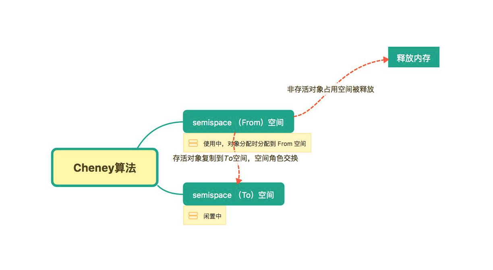
- 简单来说，将内存的空间分为两个semispace，同一时刻只有一个空间处于使用中。使用中的叫做 to space，不被使用的叫做 from space。
- 复制的方式实现的垃圾回收算法复制的过程采用的是BFS（广度优先遍历）的思想，从根对象出发，广度优先遍历所有能到达的对象
- 分配对象时，先在From空间分配，垃圾回收时检查（宽度优先）From空间的存活对象，将存活对象复制到To空间，清理非存活对象，复制后，空间身份发生对调。
- 使用Cheney算法时，总有一半的内存是空的。新生代很小，浪费的内存空间并不大。而且由于新生代中的对象绝大部分都是非活跃对象，需要复制的活跃对象比例很小，所以其时间效率十分理想
对象的可达性：从初始的根对象（window，global）的指针开始，这个根指针对象被称为根集（root set），从这个根集向下搜索其子节点，被搜索到的子节点说明该节点的引用对象可达，并为其留下标记，然后递归这个搜索的过程，直到所有子节点都被遍历结束，那么没有被标记的对象节点，说明该对象没有被任何地方引用，可以证明这是一个需要被释放内存的对象，可以被垃圾回收器回收。
晋升机制：为了解决某些对象一直在被使用会持续的积压在新生代区域，V8采用了 晋升机制 将满足条件的对象放到老生代内存区中存储，释放新生代内存区域的空间。
晋升机制的条件（同时满足）：
- 经历过一次Scavenging算法，且并未被标记清除的，也就是过一次翻转置换操作的对象。
- 在进行翻转置换时，被复制的对象大于to space空间的25%。(from space 和 to space 一定是一样大的) 晋升后的对象分配到老生代内存区，便由老生代内存区来管理。
Scavenge 的局限性
Scavenge 只适用于新生代这种对象生死频繁，并且整体内存使用量不大，可以忍受浪费多一倍空间的情况。对于对象多长驻，而且空间会越来越大的老生代来说，这种算法不适用。
主垃圾回收器(Mark-Sweep & Mark-Compact)
主垃圾回收器：用来回收老生代的垃圾，通常会有在新生代晋升后的对象以及初始占用空间很大的对象会存储在老生代内存区。
过程：主垃圾回收器会先使用标记 - 清除（Mark-Sweep）的算法、标记 - 整理（Mark-Compact） 算法进行垃圾回收进行垃圾回收。
标记 - 清除（Mark-Sweep）
- 标记过程：标记阶段就是从一组根元素开始，递归遍历这组根元素，在这个遍历过程中，能到达的元素称为活动对象，没有到达的元素就可以判断为垃圾数据。
- 垃圾清除：它和副垃圾回收器的垃圾清除过程完全不同，主垃圾回收器会直接将标记为垃圾的数据清理掉。
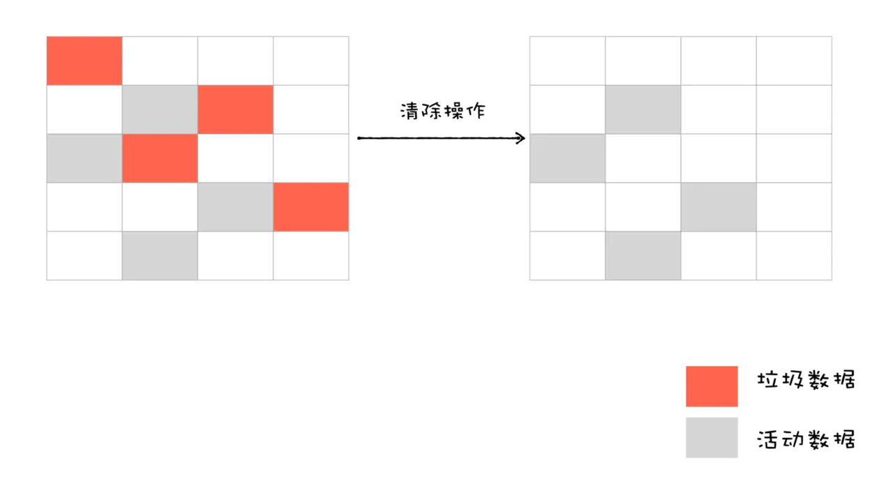
通过这种标记清除的方式清理内存会产生大量不连续的内存碎片，当我们想要存储一个大的对象的时候就可能没有足够的空间，所以还需要 标记 - 整理（Mark-Compact） 算法进行垃圾回收。 。
标记 - 整理（Mark-Compact）
主要分两步：
- 首先同样是标记过程。
- 将未标记的对象（存活对象）进行左移，移动完成后清理边界外的内存。
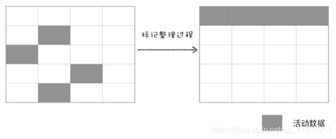
V8通过标记 - 清除（Mark-Sweep） 以及 标记 - 整理（Mark-Compact） 两种算法对老生代内存区进行垃圾回收，这就是主垃圾回收器的主要工作。
全停顿
已经知道V8是使用副垃圾回收器和主垃圾回收器处理垃圾回收的，不过由于JavaScript是运行在主线程之上的，一旦执行垃圾回收算法，都需要将正在执行的JavaScript脚本停顿下来，待垃圾回收完毕后再回复脚本执行。
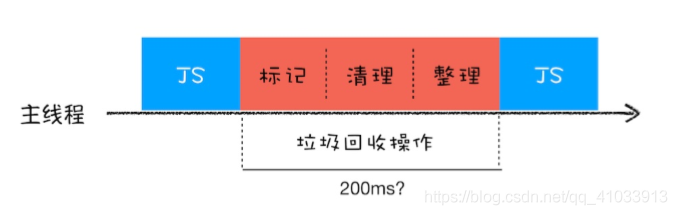
在V8新生代的垃圾回收中，因其空间较小，且存活对象较少，所以全停顿的影响不大，但老生代就不一样了。
垃圾回收优化策略（Orinoco）
上文中描述的V8的两个垃圾回收器所采用的方法其实在具有垃圾回收机制的编程语言中都是非常常见的。
评价垃圾回收机制的一个重要标准：执行垃圾回收时主线程挂起的时间，而V8为了优化这一部分体验（减少主线程挂起的时间），启动代号为Orinoco的垃圾回收器项目。
Orinoco共实现了三个优化
- 并行垃圾回收 (parallel)
- 增量垃圾回收 (incremental)
- 并发垃圾回收 (concurrent)
并行垃圾回收
前提：新生代内存区 和 老生代内存区根据之前讲过的垃圾回收机制，我们可以确定在新生代内存区中的对象和老生代内存区中的对象是完全不同的。
新生代在执行 标记->复制->清理 的操作和老生代执行 标记->清理->紧凑 的操作是没有任何依赖关系的。
策略：于是Orinoco判断将没有依赖关系的垃圾清理逻辑（不止上述一种）通过并行执行的方式来优化减少执行垃圾回收占用主进程的时间。
所以Orinoco只需要开启辅助几个辅助进程就可以同时完成垃圾清理的工作如下图：
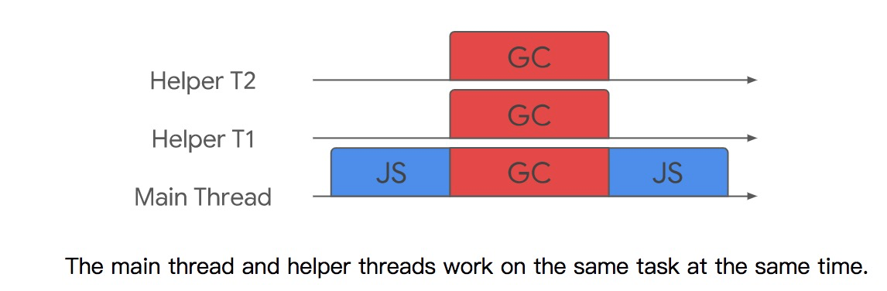
增量垃圾回收
虽然并行垃圾回收的并行机制可以有效的减少主进程的占用，但是面对一个大的对象一次执行标记也要话很长的时间。
从2011年开始V8引入了增量标记机制，也就是增量垃圾回收机制。
为了降低全堆垃圾回收的停顿时间，增量标记将原本的标记全堆对象拆分为一个一个任务，让其穿插在JavaScript应用逻辑之间执行，它允许堆的标记时的5~10ms的停顿。增量标记在堆的大小达到一定的阈值时启用，启用之后每当一定量的内存分配后，脚本的执行就会停顿并进行一次增量标记。
增量标记的算法，增量回收是并发的（concurrent），要实现增量执行，需要满足：
- 垃圾回收可以被随时暂停和重启，暂停时需要保存当时的扫描结果，等下一波垃圾回收来了之后，才能继续启动。
- 在暂停期间，被标记好的垃圾数据如果被JavaScript代码修改了，那么垃圾回收器需要能够正确地处理。
在没有采用增量算法之前，V8 使用黑色和白色来标记数据。在执行一次完整的垃圾回收之前，垃圾回收器会将所有的数据设置为白色，用来表示这些数据还没有被标记，然后垃圾回收器从 GC Roots 出发，将所有能访问到的数据标记为黑色。
遍历结束之后，黑色就是活动数据，白色数据就是垃圾数据。
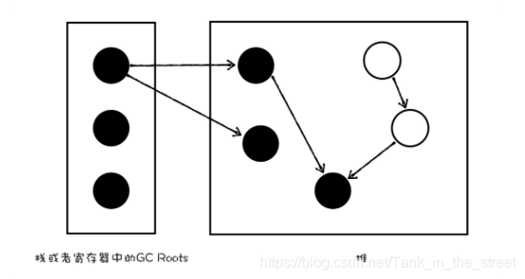
垃圾回收器执行了一小段增量回收后，被 V8 暂停了，然后主线程执行了一段 JavaScript 代码，然后垃圾回收器又被恢复了，它到底是从 A 节点开始标记，还是从 B 节点开始执行标注过程呢？
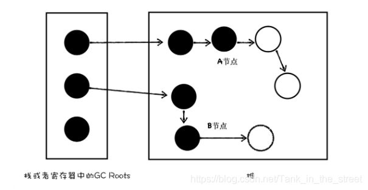
三色标记法于是V8采用了 标记位 和 标记工作表 来实现标记。
标记位用来标记三种颜色：白色(00)、灰色(10)、黑色(11)，
黑色：这个节点被 GC Root 引用到了，而且该节点的子节点都已经标记完成了 ;
灰色：这个节点被 GC Root 引用到，但子节点还没被垃圾回收器标记处理，也表明目前正在处理这个节点。
白色：这个节点没有被访问到，如果在本轮遍历结束时还是白色，那么这块数据就会被收回。
标记流程：
- 最初状态所有的对象都是 白色 也就是未被根节点引用到的对象。
- 当垃圾回收程序发现一个对象被引用会将这个对象标记为 灰色 并将其推入到 标记工作表 中。
- 标记工作表 会访问所有自身的 灰色 对象，并访问该对象的所有子对象（不管有没有子对象），结束后会将该对象标记为黑色。
- 标记工作表 会持续的被注入灰色的对象（每发现一个新的要标记的对象都会注入到标记工作表中）
- 如果 标记工作表 中 没有了灰色 的对象，那么代表所有的对象都是 黑色 或者 白色，之后可以放心的清理掉 白色 的对象。
引入灰色标记之后，垃圾回收器就可以依据当前内存中有没有灰色节点，来判断整个标记是否完成，如果没有灰色节点了，就可以进行清理工作了。如果还有灰色标记，当下次恢复垃圾回收器时，便从灰色的节点开始继续执行。
垃圾回收程序从根节点开始标记（将灰色推入到标记工作表）
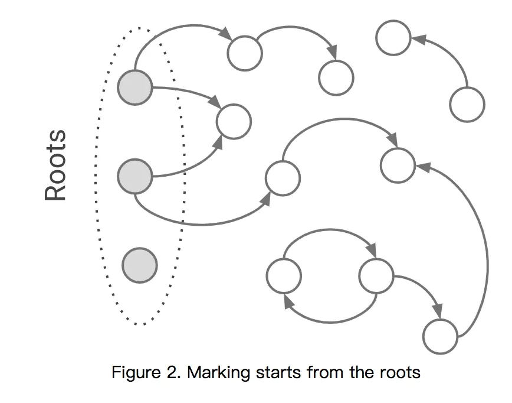
遍历处理（垃圾回收程序标灰，标记工作表标黑）
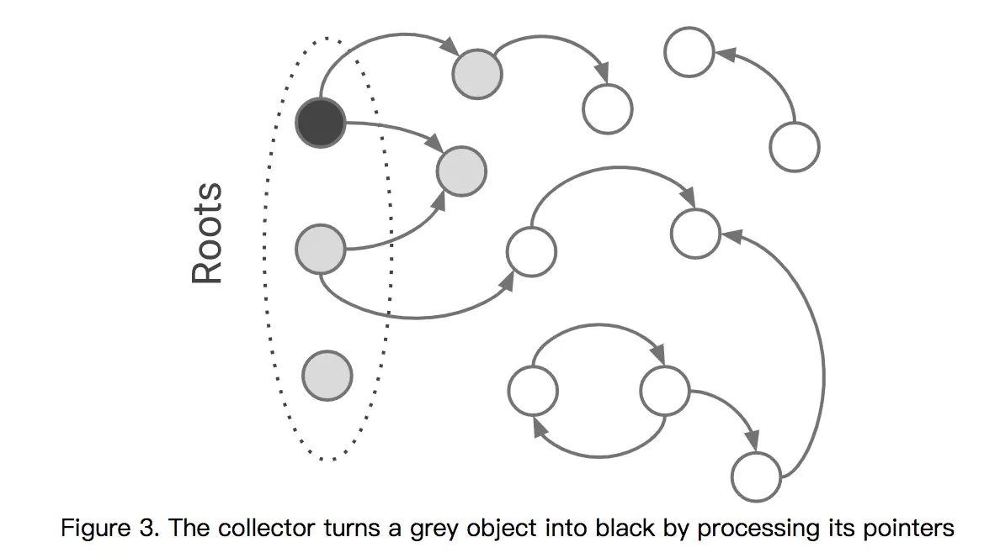
完成后的最终形态
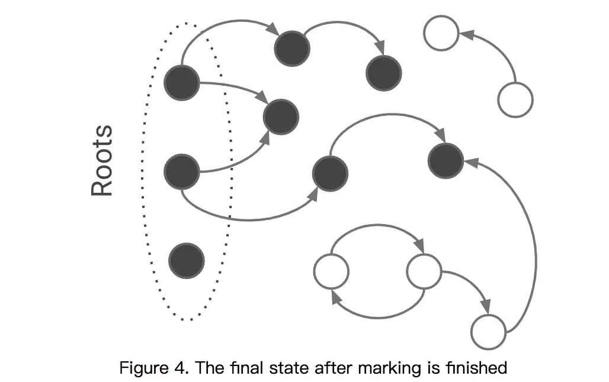
标记好的数据如果被主线程修改了？V8 使用了写屏障（write-barrier） （Dijkstra-style）机制来实现：
- 简单来说就是强制让黑色的对象不能直接指向白色的对象。
// Called after `object.field = value`.
write_barrier(object, field_offset, value) {
if (color(object) == black && color(value) == white) {
set_color(value, grey);
marking_worklist.push(value);
}
}
原理：每次往一个对象添加引用（写入一个指针）的时候，都执行一段代码，检查这个被写入的指针是否是由老生代对象指向新生代对象的，记录下所有从老生代指向新生代的指针。这个用于记录的数据结构叫store buffer，维护了一个从老生代对象到新生代对象的指针列表。为了防止它无限增长下去，会定期地进行清理、去重和更新。
通过扫描，得知根对象->新生代和新生代->新生代的引用，通过检查 store buffer，得知老生代->新生代的引用，就没有漏网之鱼，可以安心地对新生代进行回收了。
写屏障开销估算
往所有的写入指针的操作加以记录的方法，看上去似乎会严重影响性能，但：
- 在程序运行的过程中，写一般比读发生得少得多
- 老生代->新生代的指针写入并不常见，我们可以先检查指针的两头是不是在同一代，是的话直接跳过写屏障即可。
由于 V8 里的页都是按至少 1MB（20 bit） 对齐的，任意一个内存地址从第一位到倒数第 21 位之间的数字，都可以唯一定位到一个内存页上。这样我们可以快速得到指针两端的页，而每个内存页的 header 又自带 flag 标明自己属于哪个空间，于是我们只要做一下位运算和简单的检查就可以跳过占多数的新生代->新生代和老生代->老生代引用了。
- V8 的优化编译器可以通过静态分析证明一个对象不会出现在老生代，或者证明这个对象不会被（内联后的）函数作用域外的对象引用而直接将它放在栈上，这时我们也就没必要对这类对象执行写屏障了。
因此，大部分场景下写屏障的性能开销相比起扫描整个堆的开销，还是性能更好的。
但是，由于write-barrier的损耗，降低了应用程序的吞吐量，所以需用其他的worker threads提高吞吐量，使worker threads也可以进行标记的工作。这就是下面要讲的平行标记和并发标记。
并发垃圾回收
并发垃圾回收和并行垃圾回收是完全不同的用一张图来表示
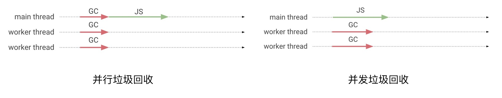
并行垃圾回收发生在主线程和工作线程上。应用程序在整个并行标记阶段暂停。
并发垃圾回收主要发生在工作线程上。当并发垃圾回收正在进行时，应用程序可以继续运行。
通常以上三种方式也不是单独存在的，而是聚合在一起使用具体如下图：
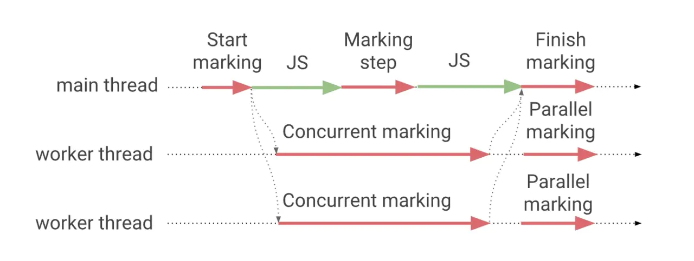
空闲时垃圾回收
空闲时垃圾回收并不属于Orinoco项目，是V8实现的一种优化策略。 通常调度程序通过对任务队列占用率的了解，以及和V8其他组件接收到的信号，使它可以估计V8何时处于空闲状态，以及可能保持多长时间。利用这个信息，V8可以分配一些优先级不高的垃圾回收任务在这个空闲时间去做。
比如V8会使用Chrome浏览器的task scheduler , 根据从Chrome其他各种组件接收到的信号以及旨在估算用户意图的各种启发式方法，动态地重新分配任务的优先级。例如，如果用户触摸屏幕，则调度程序将在100毫秒的时间段内优先处理屏幕渲染和输入任务，以确保用户界面在用户与网页交互时保持响应。
例如，如果以60 FPS进行渲染，则帧间间隔为16.6 ms。如果没有在屏幕上进行任何有效的更新，则task scheduler 将启动更长的空闲时间，该空闲时间持续到启动下一个待处理任务为止，且上限为50毫秒，以确保Chrome保持对意外用户输入的响应。
问题
浏览器怎么进行垃圾回收？1、什么是垃圾
- 不再需要，即为垃圾
- 全局变量随时可能用到，所以一定不是垃圾
2、如何捡垃圾（遍历算法）
- 标记空间中「可达」值。
- 从根节点（Root）出发，遍历所有的对象。
- 可以遍历到的对象，是可达的（reachable）。
- 没有被遍历到的对象，不可达的（unreachable）
- 回收「不可达」的值所占据的内存。
- 做内存整理。
3、什么时候捡垃圾
- 前端有其特殊性，垃圾回收的时候会造成页面卡顿。
- 分代收集、增量收集、闲时收集。
Javascritp 中类型：值类型，引用类型。
- 引用类型
- 在没有引用之后，通过 V8 自动回收。
- 值类型
- 如果处于闭包的情况下，要等闭包没有引用才会被 V8 回收。
- 非闭包的情况下，等待 V8 的新生代切换的时候回收。
内存泄露：指你「用不到」（访问不到）的变量，依然占居着内存空间，不能被再次利用起来。
以 Vue 为例，通常有这些情况：
- 监听在 window/body 等事件没有解绑
- 绑在 EventBus 的事件没有解绑
- Vuex 的 $store，watch 了之后没有 unwatch
- 使用第三方库创建，没有调用正确的销毁函数
解决办法：beforeDestroy 中及时销毁
- 绑定了 DOM/BOM 对象中的事件 addEventListener ，removeEventListener。
- 观察者模式 $on，$off处理。
- 如果组件中使用了定时器，应销毁处理。
- 如果在 mounted/created 钩子中使用了第三方库初始化，对应的销毁。
- 使用弱引用 weakMap、weakSet。
闭包会导致内存泄露吗？正确的答案是不会。
内存泄露是指你「用不到」（访问不到）的变量，依然占居着内存空间，不能被再次利用起来。 闭包里面的变量就是我们需要的变量，不能说是内存泄露。
IE 有 bug，IE 在我们使用完闭包之后，依然回收不了闭包里面引用的变量。这是 IE 的问题，不是闭包的问题。
weakMap weakSet 和 Map Set 有什么区别？在 ES6 中为我们新增了两个数据结构 WeakMap、WeakSet，就是为了解决内存泄漏的问题。
它的键名所引用的对象都是弱引用，就是垃圾回收机制遍历的时候不考虑该引用。
只要所引用的对象的其他引用都被清除，垃圾回收机制就会释放该对象所占用的内存。
也就是说，一旦不再需要，WeakMap 里面的键名对象和所对应的键值对会自动消失，不用手动删除引用。